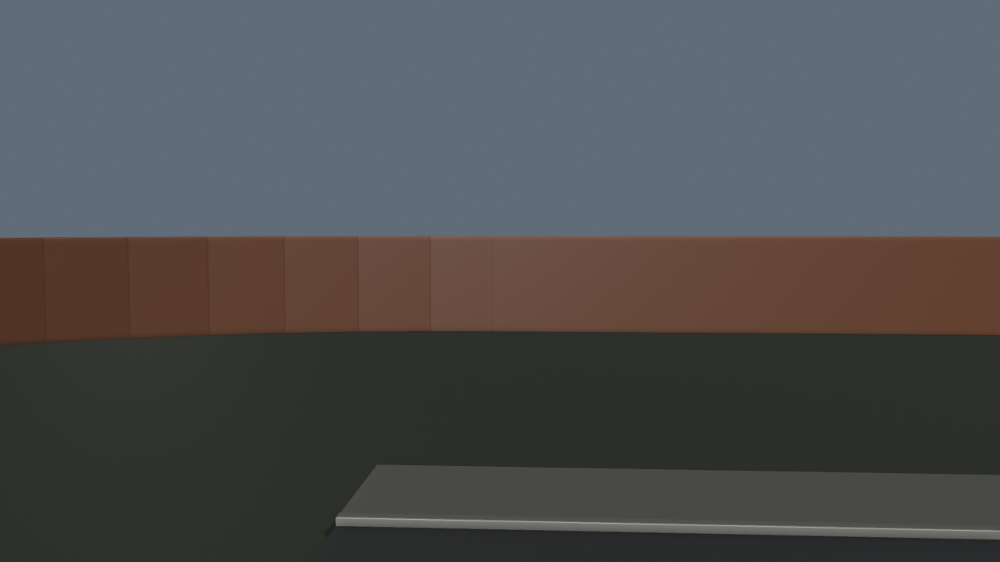
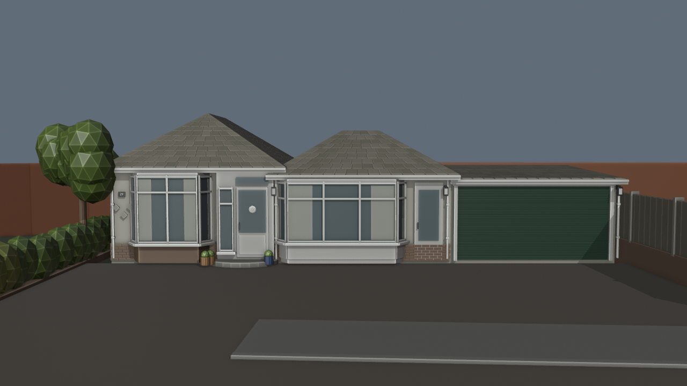
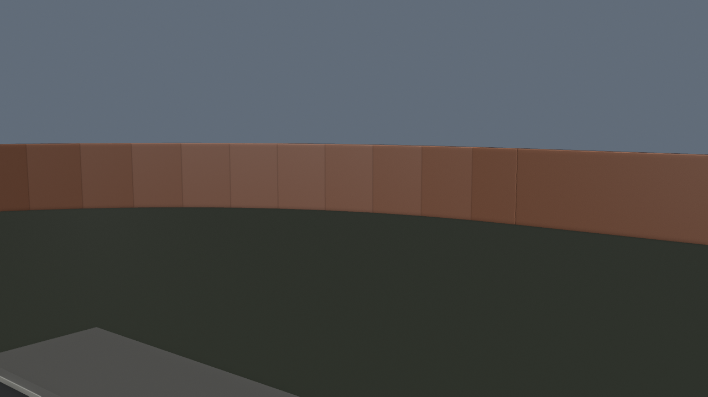
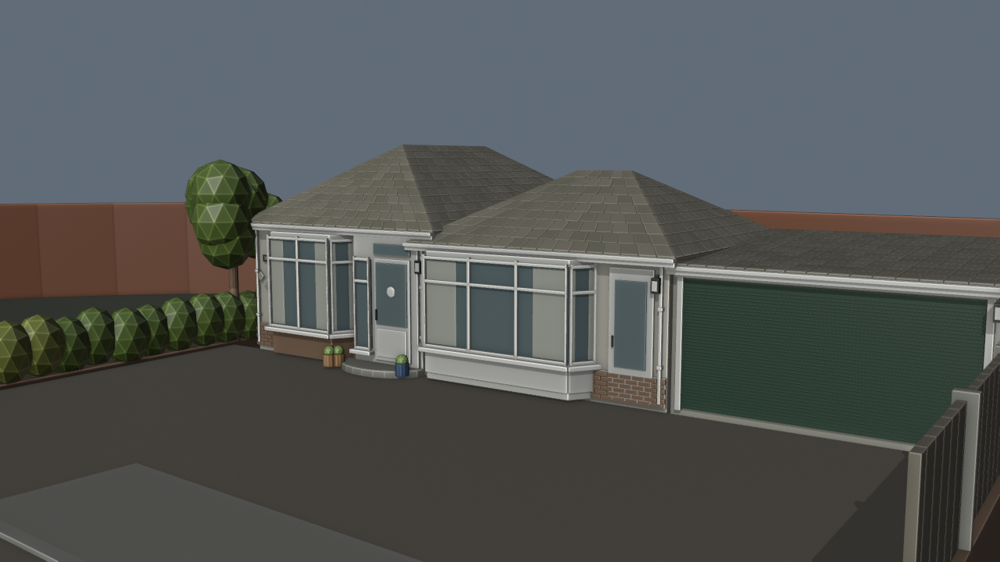
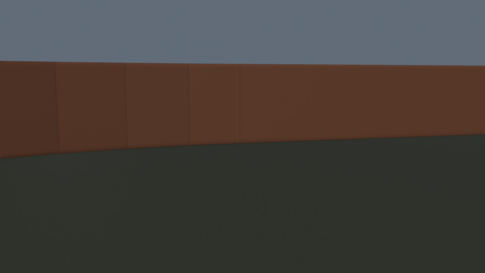
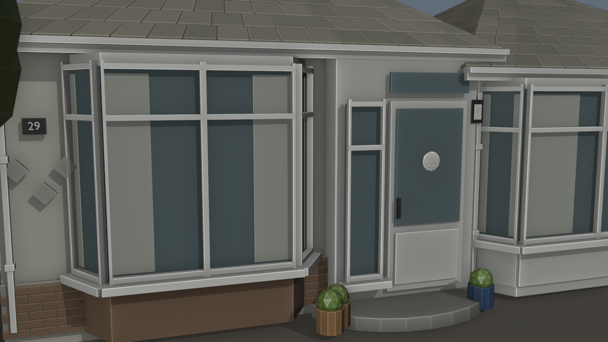
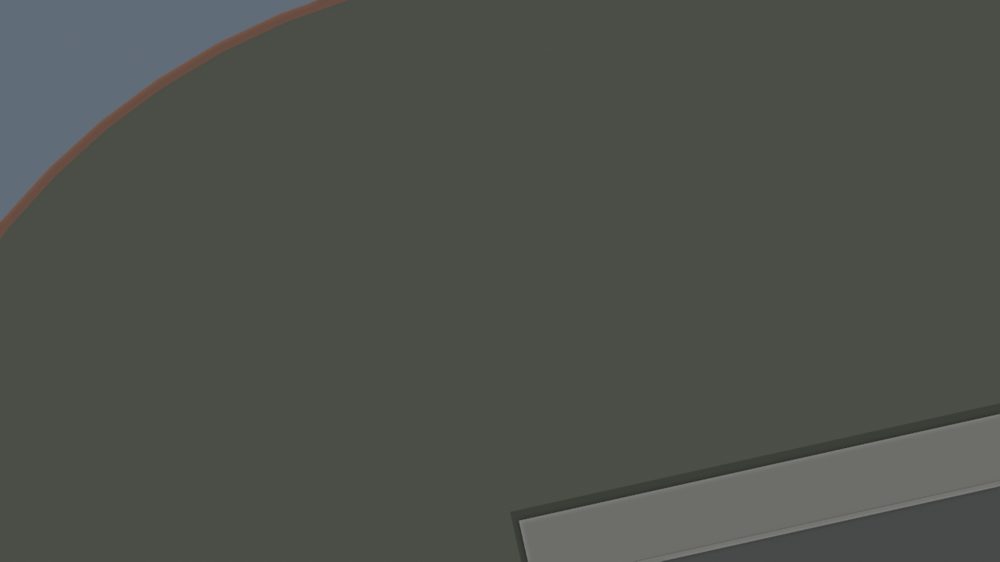
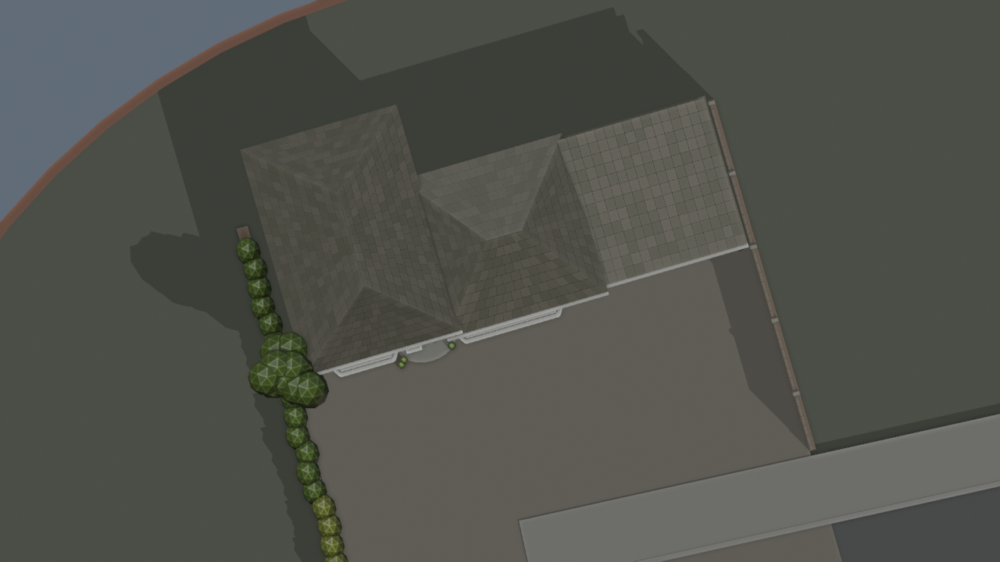

Photo-led from Sam’s identified Google Street View collage: cream bungalow, paired hipped roofs, bay joinery, porch, ribbed green garage door, driveway, hedge and right brick/timber boundary. Original reference imagery stays local and is not embedded in the model or this gallery.
Exact dimensions, rear footprint, position and facing remain estimates pending the Google top-down comparison. This is a static closed exterior. Road-end widening and station ramp/car park/rail corridor are unfinished. BO3 unchanged.
Four matched views use the same cameras before/after. The overhead is a model view, not satellite evidence.








{
"geometry": {
"source": "assets/blender/pharmacie-station-detail-v43.blend",
"output": "assets\\blender\\pharmacie-holmdale-house-v44.blend",
"new_meshes": 1721,
"new_text_objects": 1,
"parent_objects_preserved": 16141,
"nonmanifold_or_nonpositive": [],
"assembly_root": "Holmdale v44 | Movable number 29 assembly",
"source_photo": "references/29 holmdale.png",
"source_sha256": "c48c89321418a5ae55976f298dd81ef3c8c7d47b36708d8ed33d774b7556434f",
"seconds": 8.555233100079931,
"limits": [
"Facade based on user-identified collage; Google source photo pixels not embedded.",
"Dimensions, rear footprint and placement are estimated; overhead comparison pending.",
"Static closed exterior; no accessible interior or BO3 behavior.",
"Road-end widening pending; sampled driveway approaches pass"
],
"active_new_meshes": 1692,
"archived_fence_parts": 11,
"corrections": [
"Fence trimmed to leave existing pavement route clear",
"Curtain folds visible in material previews",
"Less angular foliage proxies",
"Pale side curtains replace thin bar-like proxies"
],
"additional_curtain_panels": 12,
"archived_thin_curtains": 30,
"total_created_meshes_including_archives": 1733
},
"route": {
"clearance_rays": 29025,
"floor_samples": 3225,
"blocked_count": 0,
"unsupported_count": 0,
"limits": [
"Not full continuous capsule collision.",
"Not all junction transitions sampled.",
"Not BO3 collision, navigation, co-op or gameplay tests."
]
}
}